Ramayana
The Eternal Epic of Dharma
A timeless journey of righteousness, sacrifice, devotion, courage and the ultimate victory of truth over evil.
🕉️ Introduction
The Ramayana is one of the greatest epics of India and a timeless treasure of Sanatan Dharma. Composed by the revered sage Maharishi Valmiki, this sacred narrative is much more than the story of Lord Rama—it is a guide to living a life rooted in truth, compassion, courage and righteousness. For thousands of years, its teachings have inspired generations across the world.
At the heart of the Ramayana is the life of Lord Rama, regarded as the seventh incarnation of Lord Vishnu. Through every stage of his life—as an ideal son, devoted husband, loyal brother, wise ruler and fearless warrior—Lord Rama demonstrates the principles of dharma (righteous duty), self-discipline and unwavering integrity.
The epic also celebrates the virtues of Mata Sita's devotion and strength, Lakshmana's unwavering loyalty, Bharat's selfless love, and Hanuman's unmatched dedication and service. Each character teaches profound lessons about duty, humility, sacrifice and faith.
This beautifully designed article will take you through the complete journey of the Ramayana—from the divine birth of Lord Rama in Ayodhya to the establishment of Ram Rajya. Along the way, we will explore the major events, meaningful teachings and timeless values that continue to guide millions of people even today.
📜 Journey Through the Ramayana
- 1. Birth of Lord Rama
- 2. Childhood & Education
- 3. Sage Vishwamitra's Ashram
- 4. Sita Swayamvar
- 5. Exile to the Forest
- 6. Panchavati & Golden Deer
- 7. Abduction of Mata Sita
- 8. Hanuman's Devotion
- 9. Journey to Lanka
- 10. Building Ram Setu
- 11. The Great War
- 12. Victory of Dharma
- 13. Return to Ayodhya
- 14. Ram Rajya
- 15. Eternal Teachings of Ramayana

👶 Birth of Lord Rama
Many thousands of years ago, the magnificent kingdom of Ayodhya flourished on the banks of the sacred Sarayu River. It was ruled by the noble and righteous King Dasharatha of the Ikshvaku dynasty. The kingdom was prosperous, peaceful and admired by neighbouring kingdoms. Every citizen lived happily under the king's just rule.
Although King Dasharatha possessed immense wealth, a powerful army and the love of his people, his heart remained filled with sorrow. He had no child to inherit the throne and continue the glorious tradition of the Solar Dynasty. As the years passed, this concern grew stronger.
King Dasharatha sought guidance from the royal sages. The great Guru Vashistha advised him to perform the sacred Putrakameshti Yajna, a divine ritual believed to bless worthy parents with children.
The yajna was conducted by the revered sage Rishyasringa. For several days, sacred hymns echoed throughout Ayodhya while thousands of sages prayed for divine blessings. At the completion of the sacrifice, a celestial being emerged from the holy fire carrying a golden vessel filled with divine kheer.
The heavenly messenger respectfully presented the sacred offering to King Dasharatha and instructed him to distribute it among his three queens—Queen Kaushalya, Queen Kaikeyi and Queen Sumitra.
Following the instructions, King Dasharatha distributed the divine kheer among his queens. Soon, the entire kingdom waited with hope and joy for the arrival of the royal children.
On the auspicious day of Chaitra Shukla Navami, under the sacred star Punarvasu, Queen Kaushalya gave birth to Lord Rama, the seventh incarnation of Lord Vishnu. At the very same time, Queen Kaikeyi gave birth to Bharata, while Queen Sumitra was blessed with the twins Lakshmana and Shatrughna.
The birth of the four princes filled Ayodhya with indescribable happiness. Temple bells rang continuously, flowers showered from the heavens, musicians played joyful melodies and the entire city celebrated the divine event with festivals, charity and prayers.
Sages declared that the birth of Lord Rama was not an ordinary event. He had descended upon Earth to destroy the tyranny of Ravana, protect the righteous and establish Dharma once again.
As Lord Rama grew, everyone who saw him was captivated by his gentle smile, extraordinary wisdom and divine radiance. Even as a child, he displayed kindness, humility, courage and deep respect for elders. These qualities made him beloved not only by the royal family but also by every citizen of Ayodhya.
Thus began one of the greatest journeys in human history—a journey that would teach the world the eternal values of truth, sacrifice, compassion and righteousness.
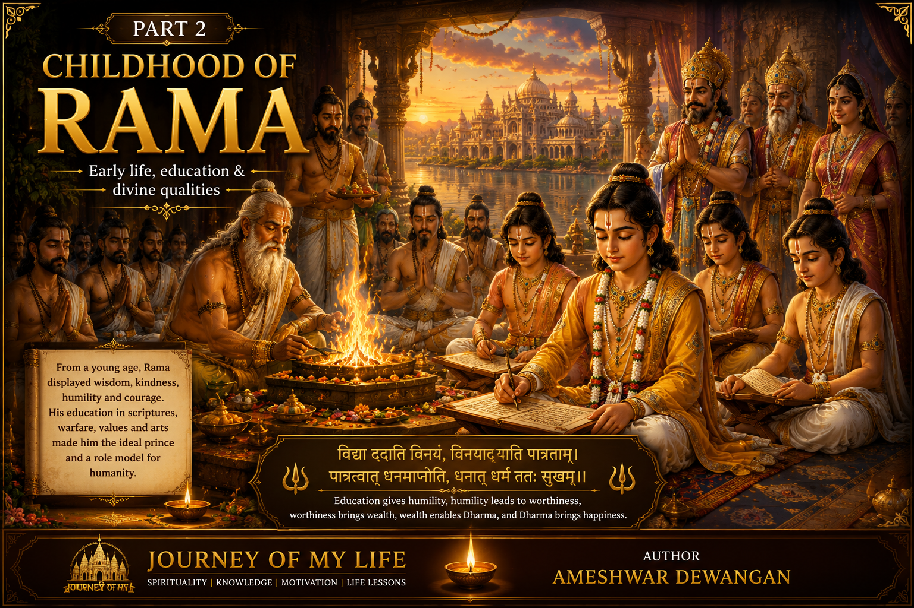
👑 Childhood of Lord Rama & Education in the Gurukul
After the joyful birth of the four princes—Rama, Bharata, Lakshmana and Shatrughna—the kingdom of Ayodhya was filled with happiness unlike ever before. Every street echoed with songs, every temple offered prayers, and every citizen believed that a divine blessing had descended upon their land.
Among the four brothers, Lord Rama was the eldest and possessed extraordinary qualities from a very young age. His calm nature, gentle speech and compassionate heart made him beloved by everyone. Whether it was a royal servant, a sage or an ordinary citizen, Rama treated every person with equal kindness and respect.
Prince Lakshmana shared a unique bond with Lord Rama. He admired his elder brother deeply and rarely stayed away from him. Wherever Rama went, Lakshmana followed with complete devotion. Their relationship became a timeless example of brotherly love and loyalty.
As the princes grew older, King Dasharatha followed the ancient tradition of sending them to the Gurukul instead of educating them only within the royal palace. In those days, even princes lived a simple life in the ashram of their guru, learning discipline, humility and self-reliance alongside other students.
The four princes began their education under the guidance of the great sage Guru Vashistha. The Gurukul was surrounded by peaceful forests, flowing rivers and sacred groves. The atmosphere encouraged learning, meditation and harmony with nature.
Every morning before sunrise, the students woke up, offered prayers, performed meditation and served their guru. They learned that knowledge without humility had no true value.
Lord Rama mastered the Vedas, Upanishads, philosophy, ethics, politics, administration, diplomacy and the responsibilities of an ideal ruler. Along with spiritual wisdom, he also received rigorous training in archery, swordsmanship, horse riding, chariot warfare and military strategy.
Despite being gifted with exceptional intelligence, Lord Rama never displayed pride. He listened carefully to every lesson, respected every teacher and treated every classmate with equality. His humility became as admirable as his wisdom.
Guru Vashistha often praised Rama for his patience, self-control and ability to remain calm even in difficult situations. He predicted that Rama would one day become an ideal king whose life would inspire humanity for generations.
Meanwhile, Bharata excelled in leadership and diplomacy, Shatrughna became highly disciplined and Lakshmana proved himself to be an unmatched warrior. Together, the four brothers developed into noble princes whose unity and affection became an inspiration for the entire kingdom.
As years passed, Lord Rama's reputation spread beyond Ayodhya. Sages, scholars and visiting kings admired not only his mastery of knowledge but also his compassion, honesty and unwavering commitment to Dharma.
Little did the people know that the peaceful days of learning in the Gurukul were preparing Rama for a destiny far greater than anyone could imagine—a destiny that would eventually lead him to confront evil and restore righteousness across the world.
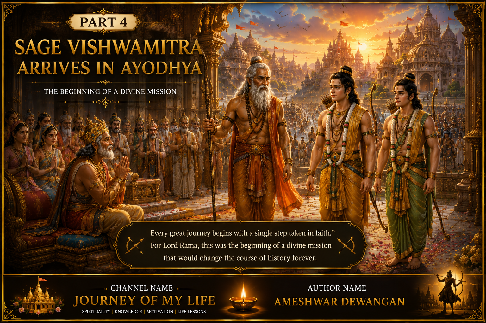
🌿 Sage Vishwamitra Arrives in Ayodhya
Years passed, and the four princes of Ayodhya grew into noble, disciplined and courageous young men. Lord Rama had become the very image of righteousness, while Lakshmana remained constantly by his side with unwavering devotion. Their wisdom, humility and skill in warfare became renowned throughout the kingdom.
One auspicious morning, the royal court of Ayodhya witnessed the arrival of one of the greatest sages of the age—Maharishi Vishwamitra. His extraordinary spiritual power, unmatched wisdom and years of deep penance made him one of the most respected sages in the world.
King Dasharatha immediately rose from his throne, welcomed the great sage with folded hands and offered him the highest respect according to ancient traditions. The royal family washed the sage's feet, presented him with flowers and respectfully requested him to accept their hospitality.
After the formal welcome, King Dasharatha humbly asked,
Maharishi Vishwamitra explained that he had been performing a sacred yajna deep inside the forest. However, powerful demons led by Tataka, Maricha and Subahu repeatedly attacked the holy rituals. They threw flesh, blood and bones into the sacred fire, disturbing the prayers of countless sages.
Although Vishwamitra possessed immense spiritual powers, he had taken a vow not to use anger or violence while performing the yajna. Therefore, he needed a brave warrior who could protect the sacrifice until its successful completion.
Looking directly at King Dasharatha, the sage calmly requested,
Hearing these words, King Dasharatha's heart was filled with fear. Lord Rama was still very young in the eyes of his loving father. The thought of sending him into dangerous forests filled with powerful demons seemed unbearable.
With folded hands, the king pleaded with the sage,
Maharishi Vishwamitra remained silent for a moment. His face reflected disappointment, for he knew the divine purpose behind Lord Rama's birth. At that very moment, Guru Vashistha stepped forward and respectfully addressed King Dasharatha.
Guru Vashistha reminded the king that Vishwamitra was not making an ordinary request. He was aware of Lord Rama's divine destiny and would personally protect the young princes throughout the journey.
The wise guru advised,
Realizing the truth in Guru Vashistha's words, King Dasharatha controlled his emotions. Though tears filled his eyes, he accepted destiny with courage. Lord Rama respectfully bowed before his father, mother and guru, seeking their blessings before beginning his first great adventure.
Lakshmana immediately stepped forward and declared that wherever Lord Rama went, he too would accompany him. His loyalty knew no limits, and no force in the world could separate the two brothers.
The citizens of Ayodhya gathered along the streets as the two young princes, carrying bows and arrows, walked behind the great sage Vishwamitra toward the dense forests. No one realized that this simple departure would become the first step in the greatest epic journey of Sanatan Dharma.
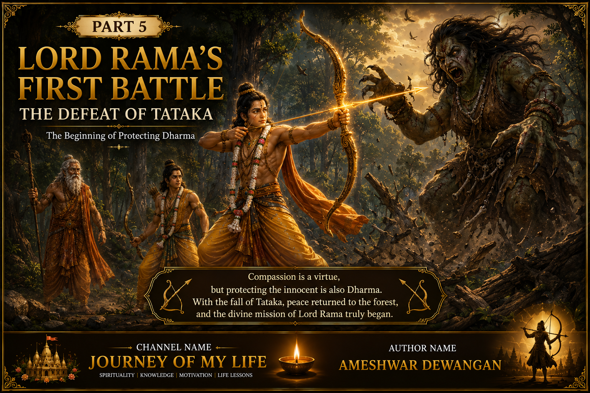
🏹 Lord Rama's First Battle – The Defeat of Tataka
After leaving Ayodhya with Maharishi Vishwamitra, Lord Rama and Lakshmana entered the peaceful forests that surrounded the hermitages of countless sages. The gentle sound of flowing rivers, the songs of birds and the fragrance of flowering trees filled the air. For the two young princes, every step was a lesson about nature, spirituality and the responsibilities of protecting righteousness.
As they travelled deeper into the forest, Maharishi Vishwamitra narrated ancient stories about the sacred land, the great sages who had meditated there and the terrible demons who had disturbed the peace of these holy places. Rama listened with complete attention, determined to fulfill the purpose for which he had accompanied the sage.
One evening, Vishwamitra taught Lord Rama and Lakshmana the sacred mantras known as Bala and Atibala. These divine disciplines strengthened the body and mind, protected them from hunger and fatigue and enhanced their focus during difficult situations. The sage also blessed the princes with knowledge of many celestial weapons that had been preserved by great sages through generations.
The next morning, the atmosphere suddenly changed. The pleasant breeze disappeared, the birds stopped singing and the forest became strangely silent. Broken trees, deep footprints and frightening roars echoed from every direction.
Maharishi Vishwamitra stopped walking and pointed toward a vast forest covered in darkness.
"This," he said, "is the dreadful kingdom of Tataka, a powerful demoness whose cruelty has driven away sages, animals and innocent travellers. Because of her violence, no one dares to enter this sacred region."
The sage then narrated Tataka's story. She had once been born into a noble family and possessed extraordinary strength. However, after a series of tragic events and a terrible curse, she transformed into a fearsome demoness. Consumed by anger and hatred, she began attacking innocent people and destroying every sacred ritual performed in the forest.
Lord Rama listened silently. Although he possessed immense compassion, he also understood that protecting innocent lives sometimes required confronting evil with courage.
Suddenly, a deafening roar shook the entire forest. Massive trees bent violently as Tataka appeared. Her gigantic form, blazing eyes and terrifying voice filled the surroundings with fear. Dust storms rose into the sky as she rushed toward the young princes.
Lakshmana immediately stood beside Lord Rama, ready to defend their guru. Maharishi Vishwamitra remained calm, knowing that the moment foretold by destiny had finally arrived.
Following his guru's command, Lord Rama lifted his magnificent bow. The sound of its string echoed across the forest like thunder. Tataka hurled enormous rocks and uprooted trees toward the princes, but Rama skillfully destroyed every attack with astonishing precision.
The fierce battle continued as arrows illuminated the dark forest like flashes of lightning. Finally, Lord Rama released a powerful divine arrow that struck Tataka with perfect accuracy. Her terrifying roar echoed through the mountains before she fell to the ground, ending years of fear and destruction.
The moment Tataka was defeated, peace returned to the forest. Birds began singing once again, gentle winds flowed through the trees and frightened animals slowly emerged from their hiding places. The sages who had long suffered under Tataka's cruelty offered heartfelt prayers of gratitude.
The heavens themselves rejoiced. According to the Ramayana, the gods praised Lord Rama for protecting Dharma and showered divine flowers upon him. Maharishi Vishwamitra smiled with great satisfaction, knowing that the young prince had successfully completed his first mission.
This victory was far more than the defeat of a single demon. It marked the beginning of Lord Rama's lifelong mission to remove injustice, protect the righteous and establish Dharma throughout the world.
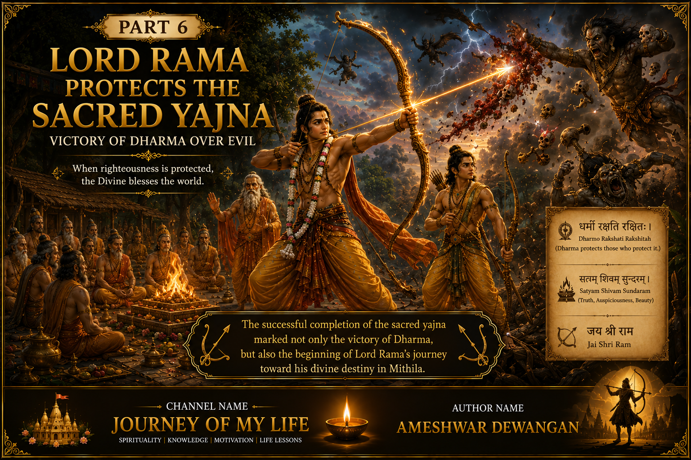
🔥 Lord Rama Protects the Sacred Yajna
After the defeat of the fearsome demoness Tataka, peace returned to the forests once again. The sages who had lived in constant fear for many years finally experienced relief. Maharishi Vishwamitra looked proudly at Lord Rama and Lakshmana, knowing that this victory was only the beginning of a much greater divine mission.
The sage then led the two princes to his sacred hermitage. It was a place filled with spiritual energy where countless sages spent their lives performing meditation, studying the Vedas and praying for the welfare of the world.
However, the peace of this holy place had been repeatedly disturbed by two powerful demons—Maricha and Subahu. Acting under the command of the mighty king Ravana of Lanka, they attacked every sacred yajna performed by the sages.
Whenever the sacred fire was lit and Vedic mantras echoed through the forest, the demons would appear from the sky. They threw blood, flesh, bones and filth into the sacrificial fire, making the rituals impossible to complete. Their cruel actions spread fear among the saints and weakened the practice of Dharma.
Maharishi Vishwamitra requested Lord Rama and Lakshmana to guard the yajna for six continuous days and nights without allowing any disturbance. Accepting the responsibility with complete devotion, the two brothers stood alert with their bows in hand while the sacred rituals began.
The yajna continued peacefully for several days. The atmosphere was filled with the sound of Vedic hymns, the fragrance of sacred herbs and the glow of the holy fire. Lord Rama remained completely focused, watching every direction while Lakshmana guarded the surroundings with unwavering determination.
On the sixth day, just as the yajna was approaching its completion, the sky suddenly turned dark. Violent winds swept across the forest, thunder echoed through the mountains and the birds flew away in fear.
Within moments, the terrible demons Maricha and Subahu descended from the heavens surrounded by countless monstrous followers. Their frightening laughter shook the entire forest as they prepared to destroy the sacred ceremony once again.
Lord Rama calmly lifted his divine bow. Without fear or anger, he waited for the perfect moment. As the demons began throwing blood and flesh toward the sacred fire, Rama released the powerful Manava Astra at Maricha.
The divine weapon struck Maricha with incredible force. Instead of killing him, the celestial arrow hurled him hundreds of kilometers across the ocean, leaving him alive but completely defeated. This event would later play an important role in the Ramayana.
Subahu, however, continued attacking the sages with great fury. Seeing no other option, Lord Rama released another divine weapon. The arrow struck Subahu directly, ending his reign of terror forever.
Lakshmana then courageously confronted the remaining demons. Fighting with remarkable speed and skill, he defeated every enemy who attempted to interrupt the sacred ceremony.
The forest soon became peaceful once again. The sacred yajna was completed successfully for the first time in many years. The sages folded their hands in gratitude, tears of joy filling their eyes as they witnessed the triumph of righteousness over evil.
At that very moment, the heavens were filled with divine music. According to the Ramayana, the gods showered fragrant flowers upon Lord Rama and Lakshmana while praising their courage and unwavering dedication to Dharma.
Maharishi Vishwamitra blessed the two princes and declared that the world would one day remember Lord Rama as the ideal protector of truth, justice and righteousness.
With the yajna successfully completed, the sage smiled and said that another important journey now awaited them—the journey to the magnificent kingdom of Mithila, where destiny had already prepared the next great chapter of Lord Rama's life.
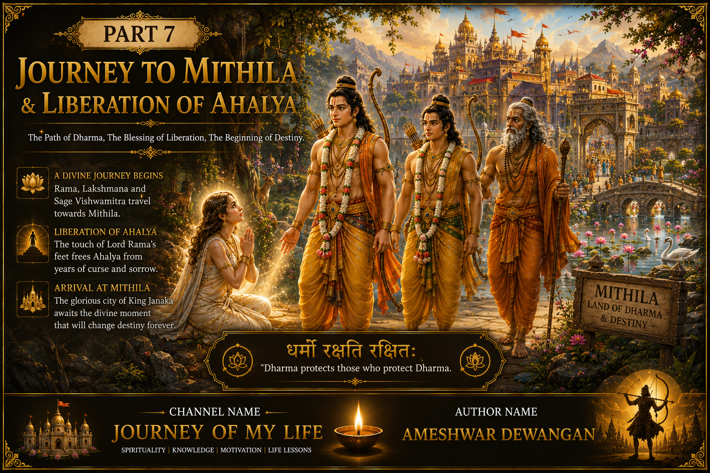
🌿 Journey to Mithila & The Liberation of Ahalya
After the successful completion of Maharishi Vishwamitra's sacred yajna, peace once again returned to the forests. The sages offered heartfelt blessings to Lord Rama and Lakshmana, whose courage had protected Dharma from the forces of evil. Seeing their devotion and noble character, Maharishi Vishwamitra decided that the time had come to take the two princes to the glorious kingdom of Mithila.
King Janaka of Mithila had organized a magnificent gathering where the sacred bow of Lord Shiva would be displayed. Princes and kings from every direction were being invited to witness this extraordinary event. Unknown to everyone, destiny had already prepared a divine meeting that would change the course of history forever.
The journey from the forests to Mithila was long and filled with sacred rivers, peaceful mountains, ancient hermitages and beautiful gardens. As they travelled, Maharishi Vishwamitra explained the history of each holy place, narrating stories of great sages whose penance had made the land sacred for generations.
Lord Rama listened with complete attention, while Lakshmana admired the beauty of nature surrounding them. Every step of the journey became another lesson in wisdom, patience and spirituality.
After travelling for several days, Maharishi Vishwamitra suddenly stopped before a silent hermitage. Unlike the other ashrams they had visited, this place appeared deserted. No birds sang among the trees, no sages offered prayers and an unusual stillness filled the surroundings.
Curious, Lord Rama respectfully asked the sage why such a peaceful place seemed completely lifeless.
Maharishi Vishwamitra gently began narrating one of the most emotional stories of the Ramayana.
"This," he said, "is the hermitage of the great sage Gautama. His wife, Ahalya, was celebrated throughout the three worlds for her beauty, purity and devotion. But through a tragic chain of events and divine destiny, she was cursed by Sage Gautama to remain invisible to the world, living here in deep penance until the touch of Lord Rama's feet would free her."
For countless years, Ahalya waited in silence. She survived only through meditation, repentance and unwavering faith that one day Lord Rama would arrive as foretold by the sages.
Lord Rama entered the hermitage with folded hands, showing respect to the sacred place. The moment His divine feet touched the ground, a brilliant golden light spread throughout the forest.
The curse that had bound Ahalya for ages was instantly broken. Before everyone's eyes, the hermitage came alive once again. Trees blossomed with fresh flowers, birds began singing and the entire forest seemed to celebrate the restoration of purity and hope.
Ahalya appeared in her radiant form, her face glowing with humility and devotion. Tears of gratitude filled her eyes as she bowed before Lord Rama.
With folded hands she offered prayers, thanking Him for granting her liberation and restoring her honour. Lord Rama, ever compassionate, blessed Ahalya with kindness and asked her to continue living a life devoted to Dharma.
Soon afterwards, Sage Gautama also returned to the hermitage. Through Lord Rama's divine grace, peace and harmony were restored. The sage welcomed Ahalya once again, and the hermitage that had remained silent for years became a sacred place filled with joy.
Continuing their journey, Lord Rama, Lakshmana and Maharishi Vishwamitra finally reached the borders of the magnificent kingdom of Mithila.
The city shone like a jewel under the morning sun. Grand palaces decorated with golden flags, beautifully carved gateways, lotus-filled lakes, colourful gardens and bustling marketplaces reflected the prosperity of King Janaka's kingdom.
People from distant lands had already gathered in Mithila to witness the great Swayamvara of Princess Sita. Brave kings, mighty warriors and renowned princes hoped to lift the divine bow of Lord Shiva and win the hand of the noble princess.
As Lord Rama entered Mithila for the very first time, destiny quietly prepared the most sacred meeting in the Ramayana—the meeting of Lord Rama and Goddess Sita.
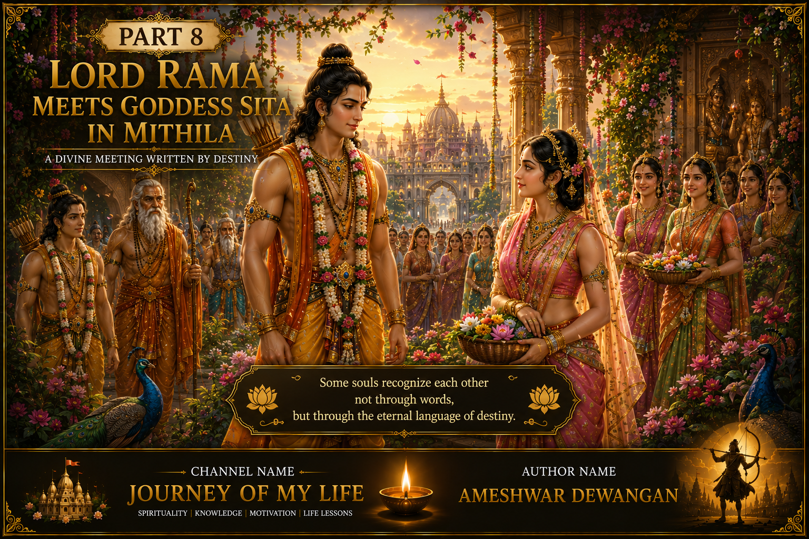
🌸 Lord Rama Meets Goddess Sita in Mithila
The magnificent city of Mithila had become the center of celebration. Every street was decorated with colorful flowers, fragrant garlands, royal banners and beautiful lamps. Musicians filled the air with joyful melodies while people from distant kingdoms arrived to witness the grand Swayamvara of Princess Sita.
King Janaka personally welcomed Maharishi Vishwamitra along with Lord Rama and Lakshmana. The king had heard countless stories about the extraordinary courage and noble character of the princes of Ayodhya, and he received them with great honor and respect.
Lord Rama admired the beauty of Mithila with calm eyes. Although the city was filled with wealth and splendor, His mind remained humble, peaceful and devoted to Dharma.
Lakshmana, filled with youthful excitement, observed the magnificent palaces, lotus ponds, colorful gardens and bustling marketplaces that reflected the prosperity and wisdom of King Janaka's kingdom.
The next morning, Goddess Sita entered the royal flower garden with her companions to collect fresh flowers for the worship of Goddess Gauri. The garden was filled with blooming lotuses, fragrant jasmine, colorful roses and singing birds that created a heavenly atmosphere.
At the same time, Maharishi Vishwamitra asked Lord Rama and Lakshmana to visit the beautiful gardens of Mithila before the preparations for the Swayamvara began.
As Lord Rama gently walked through the peaceful garden, destiny prepared one of the most sacred moments in the Ramayana.
Suddenly, Lord Rama and Goddess Sita saw each other for the very first time.
Time itself seemed to stand still.
Neither spoke a single word, yet their hearts recognized each other through a divine connection created long before their earthly birth.
Lord Rama respectfully lowered His eyes with humility, while Goddess Sita shyly folded her hands. Her heart became filled with peace and devotion as she silently prayed that the noble prince standing before her would become her husband.
After returning from the garden, Goddess Sita entered the temple of Goddess Gauri. With complete faith she offered flowers and prayed sincerely.
"O Divine Mother," she whispered, "if my heart has chosen the right person, please bless me so that Lord Rama becomes my husband."
According to ancient tradition, Goddess Gauri accepted the pure prayer of Sita. A flower from the sacred idol gently fell before her, which was understood as a divine blessing.
Sita's heart became filled with hope, faith and quiet happiness.
Meanwhile, Lord Rama returned to Maharishi Vishwamitra without speaking about the encounter. His discipline and humility remained unchanged, yet deep within His heart He understood that the meeting had not been an ordinary coincidence.
Across Mithila, preparations for the grand Swayamvara reached their peak. Thousands of guests gathered inside the magnificent royal assembly hall.
At the center of the hall rested the legendary Bow of Lord Shiva, placed upon a massive golden platform. The sacred bow was so enormous and powerful that hundreds of strong men had been required merely to transport it into the palace.
Many mighty kings and fearless warriors had already arrived, each confident that they alone possessed the strength to lift the divine weapon.
King Janaka announced before the entire assembly that whoever could lift, string and prove mastery over the sacred bow of Lord Shiva would win the hand of Princess Sita in marriage.
The atmosphere became filled with excitement, anticipation and suspense. Every eye turned toward the great bow that no ordinary human had ever been able to move.
Standing quietly among the gathered princes was Lord Rama, calm as the moon, completely free from pride or desire for fame.
The greatest test of strength, devotion and destiny was about to begin.
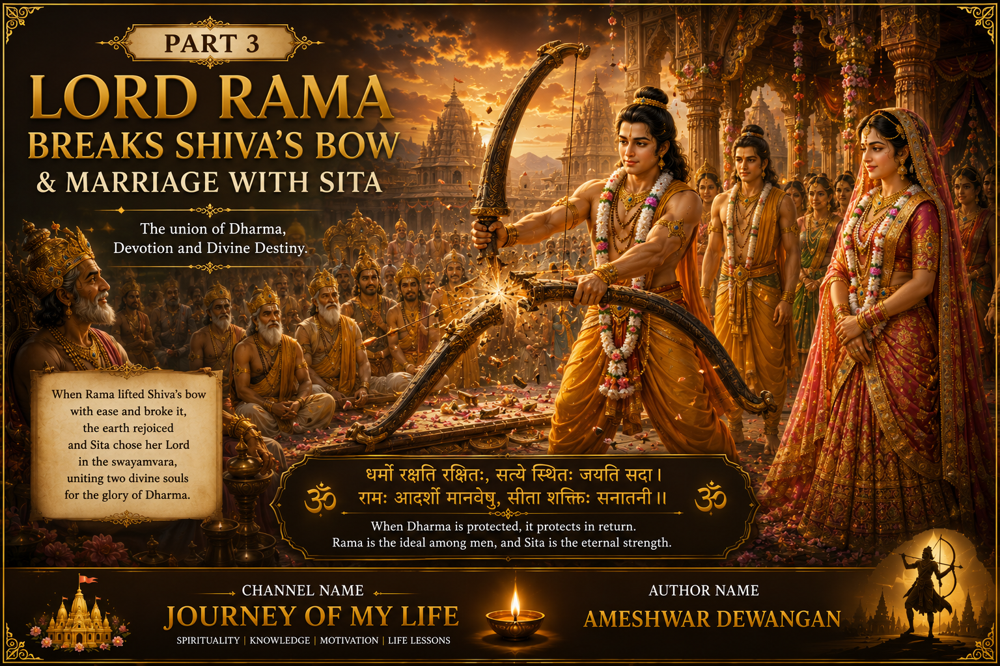
🔱 Sita Swayamvar & The Breaking of Lord Shiva's Divine Bow
The long-awaited day of Princess Sita's Swayamvar had finally arrived. From sunrise itself, the entire city of Mithila sparkled with celebration. Every palace was decorated with colorful flowers, fragrant garlands, golden banners and countless lamps. The streets echoed with the sounds of conch shells, drums and Vedic chants as guests from distant kingdoms gathered to witness the historic event.
Inside the magnificent royal court, a grand assembly had been prepared. Kings, princes, sages and learned scholars occupied their places with great excitement. At the center of the hall rested the sacred bow of Lord Shiva, placed upon a massive golden platform. The divine weapon appeared like a mountain of celestial power, radiating an aura that filled everyone with awe.
King Janaka rose from his throne and welcomed all the honored guests. With folded hands he addressed the assembly.
"This sacred bow belongs to Lord Shiva. Whoever can lift it, string it and prove worthy of its divine strength shall win the hand of my beloved daughter, Princess Sita."
The announcement filled the hall with anticipation. Every warrior believed that he possessed enough strength to accomplish the impossible.
One by one, the mighty kings stepped forward. Some were famous conquerors, while others had never tasted defeat in battle. They approached the divine bow with complete confidence.
However, the moment they tried to lift it, the bow refused to move. Some exhausted all their strength without success. Others could not even raise one end of the weapon from its platform.
The great assembly watched in complete silence as every powerful king failed before Lord Shiva's bow.
Even the strongest warriors, whose names inspired fear across kingdoms, returned to their seats with disappointment and humiliation.
Princess Sita silently watched everything from the royal balcony. Though her face remained calm, her heart prayed continuously to Goddess Gauri, hoping that the noble prince she had seen in the royal garden would fulfill destiny.
King Janaka became deeply saddened. Looking at the silent gathering, he spoke with great emotion.
"Has the earth truly become empty of brave and worthy heroes? Was my promise impossible from the very beginning?"
His words filled the hall with sorrow.
Hearing the king's disappointment, Lakshmana became angry. His devotion toward Lord Rama could not tolerate anyone believing that no hero remained upon the earth.
With folded hands, however, Lord Rama gently signaled Lakshmana to remain calm. Humility and patience were always His greatest strengths.
Maharishi Vishwamitra then smiled peacefully and turned toward Lord Rama.
"My child," the great sage said, "the time chosen by destiny has arrived. Rise and honor the sacred bow."
Lord Rama respectfully bowed before Maharishi Vishwamitra, King Janaka, the assembled sages and finally before the sacred bow of Lord Shiva.
Without pride or excitement, He slowly approached the divine weapon.
The entire royal court became silent.
Even the wind seemed to stop.
With effortless grace, Lord Rama placed His hand upon the mighty bow.
To the astonishment of everyone present, He lifted the enormous bow as easily as a child lifts a flower.
The kings watched in disbelief.
As Lord Rama began stringing the bow, its tremendous divine energy shook the entire hall.
Suddenly—
A thunderous sound echoed through the three worlds.
The sacred bow broke into two mighty pieces.
Its roar resembled the sound of a thousand thunderstorms, shaking mountains, forests and heavenly realms alike.
The gods showered fragrant flowers from heaven.
Celestial drums echoed through the skies.
Sages chanted Vedic hymns while the people of Mithila erupted with joy.
King Janaka's eyes filled with tears of happiness. At last he had found the perfect husband for his daughter.
Princess Sita descended gracefully from the royal balcony carrying a beautiful garland of fresh lotus and jasmine flowers.
With folded hands and eyes filled with devotion, she stood before Lord Rama.
The entire assembly watched in complete silence as the divine princess gently placed the victory garland around Lord Rama's neck.
That sacred moment marked the eternal union of Lord Vishnu and Goddess Lakshmi upon the earth in the forms of Lord Rama and Goddess Sita.
Conch shells echoed across Mithila.
Flowers rained from the heavens.
Joy filled every heart.
The preparations for the grand royal wedding immediately began, promising one of the most glorious celebrations ever witnessed in the history of Bharat.
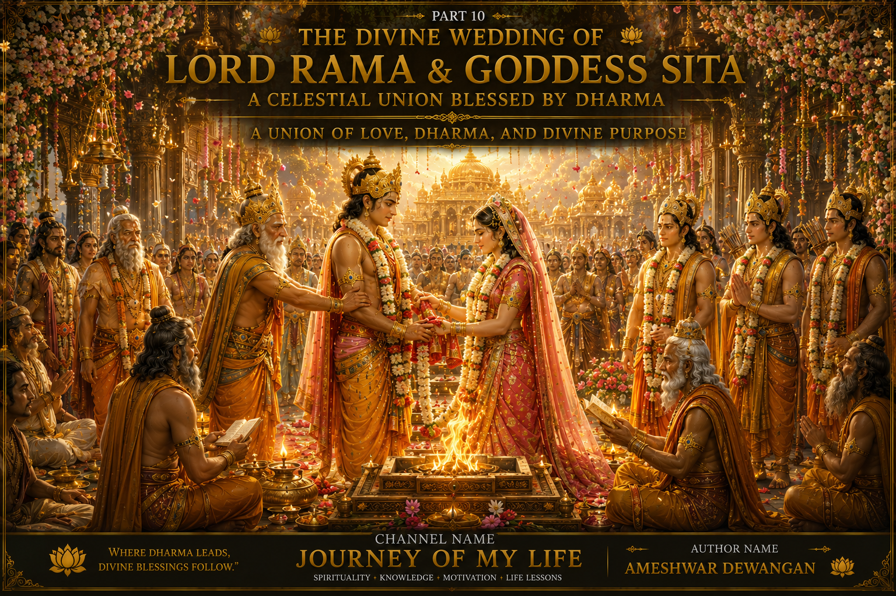
💍 The Divine Wedding of Lord Rama & Goddess Sita
After the sacred bow of Lord Shiva was broken, joy spread throughout the kingdom of Mithila. The impossible had been accomplished with effortless grace by Lord Rama, proving that He alone was destined to become the husband of Princess Sita.
King Janaka's heart overflowed with happiness. He immediately embraced Maharishi Vishwamitra and expressed his gratitude for bringing Lord Rama to Mithila.
The news of the divine victory spread across the land like the rays of the morning sun. Temples rang with bells, people danced in celebration, and the streets of Mithila were decorated with fragrant flowers, colorful flags, and countless lamps.
Every citizen understood that they were about to witness one of the holiest marriages in the history of mankind.
King Janaka sent respected messengers to Ayodhya with an invitation for King Dasharatha to attend the royal wedding of Lord Rama and Princess Sita.
When the joyful news reached Ayodhya, King Dasharatha was overwhelmed with happiness. Along with Queen Kaushalya, Queen Sumitra, Queen Kaikeyi, Guru Vashistha, Bharata, Shatrughna and the royal family, he immediately began preparations for the journey to Mithila.
The royal procession was magnificent. Decorated elephants, majestic horses, golden chariots and thousands of soldiers accompanied the King. Priests chanted Vedic hymns while musicians filled the air with auspicious melodies.
The people of Mithila welcomed the guests with flowers, sandalwood paste and heartfelt respect.
After consulting the sacred scriptures, Guru Vashistha and Sage Shatananda selected the most auspicious moment for the marriage ceremony.
The grand wedding pavilion was decorated with lotus flowers, jasmine garlands, fragrant incense, golden pillars and sacred lamps that illuminated every corner.
Sages from different kingdoms gathered to perform the Vedic rituals. Their powerful chants created an atmosphere filled with divine energy and spiritual peace.
Princess Sita entered the mandap dressed in magnificent royal attire, adorned with precious ornaments that reflected her simplicity, grace and purity.
Lord Rama appeared equally radiant, dressed in royal garments that shone with elegance while His humble smile won the hearts of everyone present.
King Janaka performed the sacred ceremony of Kanyadaan with deep emotion.
Holding Sita's hand, he placed it into the hands of Lord Rama and said,
"Today I offer my beloved daughter to you. May both of you always walk together on the path of Dharma, compassion and righteousness."
Lord Rama respectfully accepted the sacred responsibility with folded hands.
The holy fire became the witness of their eternal union.
Together they performed the seven sacred steps around the fire, each step representing faith, prosperity, strength, happiness, family, friendship and lifelong devotion.
The gods showered heavenly flowers while celestial musicians filled the skies with divine melodies.
The celebrations did not end with the marriage of Lord Rama and Goddess Sita alone.
King Janaka joyfully proposed that the four brothers of Ayodhya should marry the four princesses of Mithila.
Thus, Lakshmana married Princess Urmila.
Bharata married Princess Mandavi.
Shatrughna married Princess Shrutakirti.
The four royal weddings transformed Mithila into a city of endless celebration.
People sang devotional songs, distributed sweets and offered prayers for the happiness of the newly married couples.
After several days of celebration, the time arrived for the royal families to bid farewell.
King Janaka blessed his daughters with tears of love and pride, reminding them that compassion, truth and righteousness should always guide their lives.
Lord Rama, Goddess Sita and the entire royal procession began their journey toward Ayodhya.
No one realized that while this journey marked the beginning of great happiness, destiny had already prepared unexpected trials that would soon test the courage, sacrifice and unwavering Dharma of Lord Rama.
⚔️ The Arrival of Lord Parashurama
After the grand wedding celebrations concluded, the royal procession of Ayodhya began its joyful journey home. Lord Rama and Goddess Sita travelled together for the first time as husband and wife. King Dasharatha, his sons, the sages and the people accompanying the procession were filled with happiness.
The roads were decorated with flowers, villages welcomed the royal family with music and prayers, and everyone celebrated the divine union of Lord Rama and Goddess Sita.
However, destiny had prepared one final test before the royal family could peacefully return to Ayodhya.
As the procession crossed a dense forest, the atmosphere suddenly changed. Dark clouds covered the sky, powerful winds swept across the land and the earth itself seemed to tremble.
Birds stopped singing. Animals ran into the forests. Even the bravest warriors looked around with concern.
Then, from a distance, a powerful sage appeared carrying a divine bow and a shining battle axe.
His body radiated unmatched spiritual energy. His eyes blazed like fire and his presence filled the surroundings with awe.
It was Lord Parashurama, the sixth incarnation of Lord Vishnu and the legendary warrior-sage who had defeated countless arrogant kings to restore Dharma.
Lord Parashurama had heard that someone had broken the sacred bow of Lord Shiva.
Believing that only an arrogant warrior could dare perform such an act, he arrived with great determination to challenge the one responsible.
King Dasharatha immediately recognized the mighty sage and became deeply worried. He respectfully folded his hands and offered prayers.
But Lord Parashurama's eyes remained fixed upon Lord Rama.
"Are you the prince who broke Lord Shiva's divine bow?" he asked.
Lord Rama stepped forward calmly and respectfully.
"Revered Sage," He replied with folded hands, "I merely obeyed the command of my Guru. If any mistake has occurred, I seek your forgiveness."
The humility in Lord Rama's words surprised everyone present.
Still unconvinced, Lord Parashurama presented another divine bow—the celestial bow of Lord Vishnu.
"If you truly possess divine strength," he declared, "lift this sacred bow, string it and place an arrow upon it."
The royal assembly fell silent.
No ordinary human had ever been able to wield the divine weapon of Lord Vishnu.
Without pride or hesitation, Lord Rama accepted the bow with complete reverence.
Within moments, He effortlessly lifted it, strung it and placed a blazing celestial arrow upon it.
The entire universe seemed to pause.
A brilliant divine light spread in every direction.
At that very instant, Lord Parashurama realized the truth.
Through his divine vision, he recognized that the prince standing before him was none other than Lord Vishnu Himself, now incarnated as Lord Rama for the protection of Dharma.
His anger disappeared instantly.
With folded hands and eyes filled with devotion, Lord Parashurama bowed before Lord Rama.
"O Lord," he said, "my purpose on Earth has been fulfilled. The responsibility of protecting righteousness now belongs to You."
Lord Rama gently lowered His bow and blessed the great sage with compassion and respect.
Lord Parashurama then departed peacefully toward the Himalayas to continue his meditation and penance.
The royal procession resumed its journey toward Ayodhya.
King Dasharatha's worries disappeared, and everyone rejoiced after witnessing the extraordinary meeting of two divine incarnations.
Yet unknown to them, another chapter of destiny was slowly approaching—one that would change the future of Ayodhya forever.
Very soon, Queen Kaikeyi would ask King Dasharatha for two promises that would send Lord Rama into exile for fourteen years and begin the greatest journey of sacrifice in the Ramayana.

👑 Kaikeyi's Two Boons & Lord Rama Accepts Fourteen Years of Exile
After returning from Mithila, Ayodhya entered a period of great happiness. The marriage of Lord Rama and Goddess Sita had filled the kingdom with joy and prosperity. The people admired Rama's wisdom, kindness and humility, and every citizen believed that the future of Ayodhya would shine under His leadership.
King Dasharatha, now growing old, wished to retire from royal responsibilities. After consulting Guru Vashistha, ministers and respected elders, he decided that the time had come to crown Lord Rama as the Crown Prince of Ayodhya.
The announcement spread across the kingdom like a festival. Homes were decorated with flowers, temples echoed with prayers and every heart overflowed with happiness.
Preparations for the coronation began immediately. Sacred rivers provided holy water for the ceremony, royal streets were decorated with colorful flags and thousands of lamps illuminated Ayodhya.
Queen Kaushalya thanked the Almighty with tears of joy, while Queen Sumitra happily prepared for the celebration.
Even Queen Kaikeyi initially rejoiced at the news. She had always loved Lord Rama as her own son and proudly believed that no one was more deserving of the throne.
However, destiny took an unexpected turn.
Kaikeyi's maid, Manthara, noticed the celebrations and became filled with jealousy. She feared that once Rama became king, Bharata would lose his importance in the royal family.
With clever and poisonous words, she slowly planted doubt in Kaikeyi's mind.
Manthara reminded Kaikeyi of the two boons that King Dasharatha had promised her long ago after she had saved his life during a great battle.
She urged the queen to claim those promises immediately.
Influenced by fear and confusion, Kaikeyi entered the royal chamber known as the 'Kop Bhavan' and refused to meet anyone.
When King Dasharatha arrived, he was shocked to see his beloved queen lying on the floor in sorrow.
He lovingly asked what troubled her and promised to fulfill any wish she desired.
Kaikeyi reminded him of the two ancient boons.
The king smiled and agreed without hesitation.
But the words that followed shattered his heart.
Kaikeyi asked for her first boon.
"My son Bharata must be crowned King of Ayodhya."
King Dasharatha stood speechless.
Then came the second boon.
"Lord Rama must leave Ayodhya and live in the forest for fourteen years."
The king collapsed in unbearable grief.
He pleaded with Kaikeyi to ask for anything else—wealth, kingdoms or treasures—but Kaikeyi refused to change her decision.
Bound by his sacred promise, King Dasharatha could not break his word.
Lord Rama was summoned to the royal palace.
Seeing His father speechless and heartbroken, Rama calmly asked Queen Kaikeyi about the reason for his sorrow.
Kaikeyi revealed the two boons and informed Him that Bharata would become king while He must spend fourteen years in exile.
Without the slightest anger, disappointment or hesitation, Lord Rama folded His hands and smiled gently.
"If this fulfills my father's promise, I gladly accept fourteen years of exile."
His peaceful acceptance astonished everyone in the palace.
For Lord Rama, protecting His father's honor was greater than wearing a crown.
When Goddess Sita heard about the exile, she firmly declared that a wife's place was always beside her husband.
No comfort of the palace could compare to serving Lord Rama in the forest.
Lakshmana also stepped forward with folded hands.
"My Lord," he said, "wherever You go, I shall follow. Allow me to serve You throughout these fourteen years."
Lord Rama lovingly accepted both their wishes.
The three changed into simple garments made from tree bark, leaving behind royal ornaments and luxurious clothing.
The citizens of Ayodhya wept openly as their beloved prince prepared to leave the kingdom.
Thus began the sacred journey of exile—a journey that would reveal the highest ideals of sacrifice, devotion, courage and righteousness, inspiring humanity for countless generations.
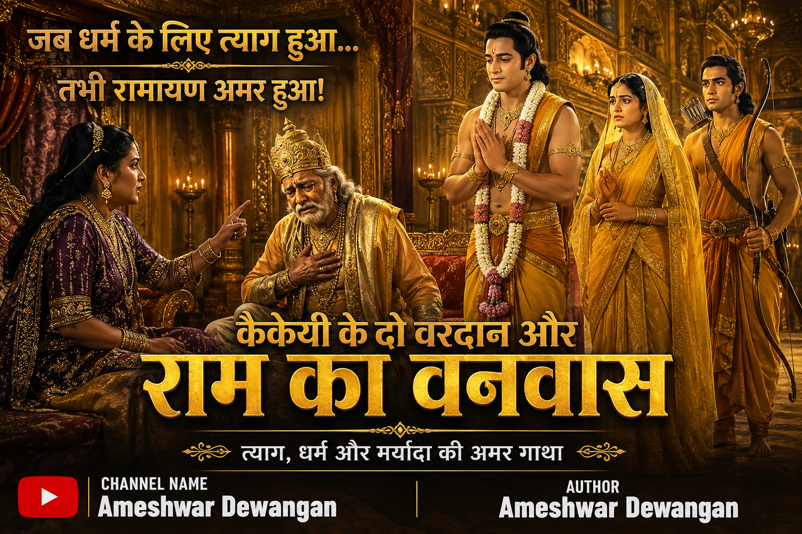
🌳 The Beginning of Vanvas – Exile, Bharata's Devotion & Chitrakoot
Having accepted the command of his father without hesitation, Lord Rama prepared to leave Ayodhya forever—or at least for the next fourteen years. There was no sorrow on His face, no anger in His heart and no complaint upon His lips. He believed that protecting truth and honoring a father's promise was greater than any royal crown.
Princess Sita insisted on accompanying her husband. She declared that a wife shares every joy and every hardship with her husband, whether in a magnificent palace or a lonely forest.
Lakshmana too refused to remain behind. With complete devotion, he requested permission to serve Lord Rama day and night throughout the exile.
Thus, the three noble souls exchanged their royal garments for simple clothes made from tree bark and prepared to leave the comforts of Ayodhya behind forever.
When the citizens of Ayodhya learned that Lord Rama was leaving, thousands rushed onto the streets. Men, women, children and elderly people surrounded the royal chariot with tears flowing from their eyes.
Nobody wished to let their beloved prince leave.
People cried aloud, begging Lord Rama to remain in Ayodhya and become their king.
But Lord Rama gently consoled everyone.
He reminded them that a kingdom survives only when its people respect truth, duty and righteousness.
Slowly the chariot moved forward while the citizens continued following it for many miles, unwilling to return home.
After crossing the River Tamasa, Lord Rama requested the charioteer Sumantra to return to Ayodhya.
The journey then continued through sacred forests, peaceful rivers and quiet hermitages where sages welcomed the divine travelers with respect.
Soon they reached the banks of the holy River Ganga.
There they met Nishadraj Guha, the devoted king of the forest tribes.
Guha embraced Lord Rama with tears of love and offered his kingdom, wealth and army in service.
Lord Rama gratefully accepted only his friendship and blessings, teaching once again that genuine love is greater than material riches.
The devoted boatman Kevat was then called to ferry Lord Rama across the River Ganga.
According to tradition, Kevat lovingly washed Lord Rama's feet before allowing Him to step into the boat.
He believed that the dust of the Lord's feet possessed divine power and wished to receive that blessing before beginning the journey.
After crossing the sacred river, Kevat refused to accept any payment.
Instead, he folded his hands and requested only the blessing of eternal devotion.
Lord Rama embraced him with affection, making the humble boatman immortal in the hearts of devotees forever.
Lord Rama, Sita and Lakshmana finally reached the beautiful forests of Chitrakoot.
Surrounded by green mountains, flowing rivers, flowering trees and melodious birds, Chitrakoot became their peaceful home during the early years of exile.
Lakshmana built a simple forest cottage where Lord Rama and Sita could live comfortably.
Though they had left behind the luxury of the palace, their hearts remained filled with peace because they lived according to Dharma.
Meanwhile, Bharata returned to Ayodhya after visiting his maternal grandfather.
He was shocked to learn that Lord Rama had gone into exile and that King Dasharatha had passed away in grief.
Overwhelmed with sorrow, Bharata refused to accept the throne.
He strongly condemned Manthara's actions and respectfully rebuked Queen Kaikeyi for the pain caused to the royal family.
Gathering the royal ministers, sages and citizens, Bharata travelled to Chitrakoot to bring Lord Rama back to Ayodhya.
When the two brothers met, they embraced each other with tears of love and devotion.
Bharata repeatedly requested Lord Rama to return and rule the kingdom.
However, Lord Rama gently explained that a father's promise could never be broken.
Understanding His brother's unwavering commitment to Dharma, Bharata placed Lord Rama's wooden sandals upon his head and carried them back to Ayodhya.
He placed the sacred Padukas upon the royal throne and ruled the kingdom only as Lord Rama's humble representative until His return.
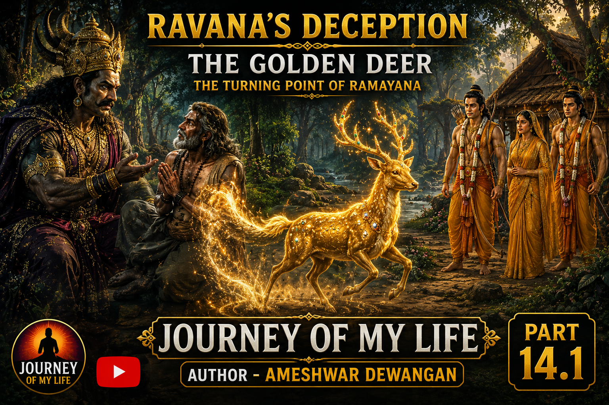
🌳 Panchavati – The Peace Before the Storm
After spending several peaceful years in Chitrakoot, Lord Rama, Goddess Sita and Lakshmana continued their exile deeper into the forests of Bharat. Following the guidance of great sages, they finally reached a beautiful place called Panchavati, situated on the banks of the sacred River Godavari.
Panchavati was unlike any place they had seen before. Towering banyan trees spread their branches across the sky, colorful flowers covered the forest floor and countless birds filled the air with melodious songs. Crystal-clear streams flowed gently through the woods while deer wandered fearlessly among the trees.
The place radiated peace and holiness, making it ideal for meditation, simple living and the practice of Dharma.
Here, Lakshmana built a beautiful forest cottage using bamboo, wood, leaves and forest vines. Though simple in appearance, the cottage became a home filled with love, devotion and happiness.
Life in Panchavati followed a sacred routine. Every morning, Lord Rama offered prayers to the rising sun before visiting nearby hermitages to protect sages from dangerous demons.
Goddess Sita lovingly cared for the cottage, worshipped the Divine and gathered fresh flowers for daily prayers.
Lakshmana remained constantly alert. Whether gathering fruits, protecting the forest home or standing guard through the night, his only desire was to serve his elder brother and sister-in-law with complete devotion.
Their life was simple, yet every day reflected peace, discipline and spiritual fulfillment.
Meanwhile, not far from Panchavati, powerful demons ruled many regions of the Dandaka Forest. They had long terrorized sages and disturbed sacred rituals.
News of a fearless prince who was protecting saints and defeating evil quickly spread among the demons.
Among those who heard these stories was Surpanakha, the sister of the mighty demon king Ravana.
Surpanakha possessed the ability to change her appearance at will. Proud, clever and powerful, she wandered freely through forests searching for pleasure and entertainment.
One day, while roaming through Panchavati, she noticed Lord Rama standing beneath the shade of a great banyan tree.
The prince's divine beauty, calm expression and radiant personality immediately captivated her.
Overcome by desire, she transformed herself into the appearance of a beautiful young woman and confidently approached Him.
With complete confidence, Surpanakha introduced herself and proposed marriage to Lord Rama.
Lord Rama smiled gently and replied with kindness,
"I am already married. My beloved wife Sita is always by my side. But my younger brother Lakshmana is unmarried. Perhaps you should speak with him."
Understanding Lord Rama's playful response, Lakshmana respectfully smiled and replied,
"I am only a humble servant of my elder brother. A princess like you deserves someone far greater than me."
Surpanakha realized that both brothers were gently teasing her.
Her admiration quickly turned into anger.
Looking toward Goddess Sita, she became consumed with jealousy.
"If she did not exist," Surpanakha thought, "Lord Rama would surely accept me."
Unable to control her rage, Surpanakha suddenly abandoned her beautiful disguise and revealed her terrifying demonic form.
Her eyes blazed like fire, her sharp claws stretched forward and her frightening roar echoed throughout the forest.
She rushed toward Goddess Sita with the intention of harming her.
In a single swift movement, Lakshmana stepped between them.
To protect Sita and stop Surpanakha's violent attack, Lakshmana used his sword and cut off her nose and ears.
Defeated and humiliated, Surpanakha screamed in pain.
Filled with anger and the desire for revenge, she fled deep into the forest, determined to seek help from her powerful brothers.
Neither Lord Rama nor Lakshmana realized that this single incident would soon trigger a chain of events leading to one of the greatest battles in history.
🦌 Surpanakha's Revenge, Ravana Meets Maricha & The Golden Deer
Humiliated and wounded after losing her nose and ears, Surpanakha fled through the dense forests of Dandakaranya. Her heart burned with anger and revenge. She could think of nothing except punishing Lord Rama and Lakshmana for the humiliation she had suffered in Panchavati.
She first approached her brothers Khara and Dushana, powerful commanders who ruled the nearby forests with thousands of Rakshasas.
Filled with rage, they immediately marched toward Panchavati with a mighty army, believing that two human princes could never defeat them.
But Lord Rama stood alone before the enormous army.
With unmatched courage and divine skill, He defeated Khara, Dushana and their entire force, restoring peace to the forest once again.
Surpanakha escaped once more, but this time she decided to seek the help of the most powerful Rakshasa in the world—her brother, Ravana, the mighty king of Lanka.
Crossing mountains and oceans, Surpanakha reached the magnificent golden city of Lanka.
She entered Ravana's royal court weeping and filled with anger.
Ravana, seated upon his magnificent throne, was shocked to see his sister in such a condition.
With great emotion he demanded to know who had dared insult a member of the royal family of Lanka.
Surpanakha described Lord Rama and Lakshmana as extraordinary warriors whose strength was beyond imagination.
She then spoke about Goddess Sita.
She described Sita's beauty, purity and grace in such vivid words that Ravana's pride slowly turned into dangerous desire.
Instead of seeking justice for his sister, Ravana became obsessed with possessing Sita for himself.
Although many wise ministers advised Ravana to avoid conflict with Lord Rama, he refused to listen.
His arrogance convinced him that no force in the three worlds could defeat the mighty king of Lanka.
To carry out his wicked plan, Ravana travelled to the lonely hermitage of Maricha.
Maricha had once faced Lord Rama and knew well that the prince of Ayodhya was no ordinary human.
When Ravana revealed his plan to abduct Sita, Maricha became frightened.
He folded his hands and pleaded with Ravana.
"O King, abandon this dangerous idea. Lord Rama is the Supreme Protector of Dharma. To oppose Him is to invite certain destruction."
But Ravana's pride had blinded him completely.
Seeing Ravana's determination, Maricha realized that he had only two choices—to die at Ravana's hands or to sacrifice himself in Lord Rama's divine mission.
With a heavy heart, he agreed to help.
Using his magical powers, Maricha transformed himself into the most magnificent golden deer ever seen.
Its body glittered like pure gold.
Its antlers shone like precious jewels.
Its skin reflected brilliant shades of silver, emerald and sapphire.
The enchanting creature seemed almost heavenly as it gracefully wandered near the cottage at Panchavati.
That morning, Goddess Sita stepped outside the forest cottage to gather flowers for worship.
Suddenly, her eyes fell upon the extraordinary golden deer.
Never before had she witnessed such a beautiful creature.
The deer leaped gracefully among the trees, disappearing behind bushes before returning again, as though inviting someone to follow it.
Filled with innocent wonder, Sita smiled and called Lord Rama.
"My Lord," she said gently, "please bring this beautiful deer for me. If it can be captured alive, it will be a delightful companion in our forest home. If not, its golden skin will remind us of the beauty of these sacred forests."
Lord Rama carefully observed the strange animal.
His divine intuition warned Him that something about the deer was unusual.
Lakshmana also expressed his doubts.
"My brother," he said, "I believe this is no ordinary deer. It may be a Rakshasa using magical powers."
Lord Rama remained silent for a few moments.
Finally, wishing to fulfill Sita's innocent request and uncover the truth behind the mysterious creature, He picked up His divine bow and arrows.
Turning to Lakshmana, He said,
"Protect Sita carefully until I return."
With those words, Lord Rama followed the dazzling golden deer deep into the forest.
Neither Sita nor Lakshmana knew that this single moment would soon change the course of the Ramayana forever.
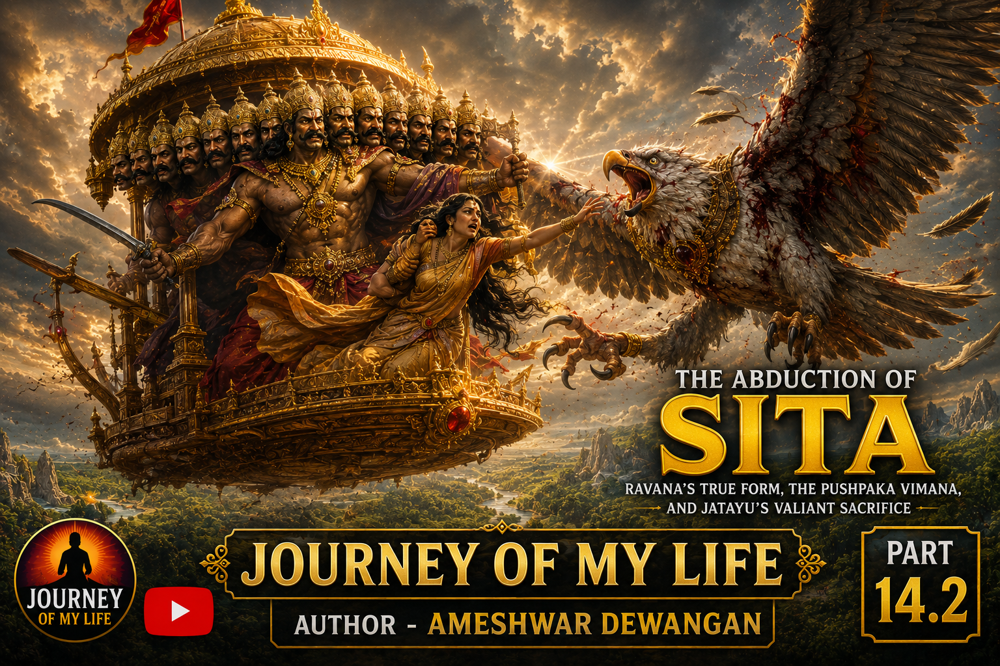
👑 Sita Haran – Lakshmana Rekha & Jatayu's Supreme Sacrifice
Lord Rama followed the mysterious golden deer deep into the forest. Every time He came close, the magical creature leaped farther away, leading Him deeper into the wilderness.
After a long pursuit, Lord Rama realized that Lakshmana's suspicion had been correct. The beautiful deer was not a real animal but the demon Maricha disguised through powerful illusion.
Knowing the deception had gone far enough, Lord Rama placed a divine arrow upon His bow and released it.
The arrow struck Maricha with perfect precision.
As the demon fell to the ground, he abandoned the form of the golden deer and returned to his true Rakshasa appearance.
Before taking his final breath, Maricha carried out Ravana's last command.
Using his remaining strength, he cried out in Lord Rama's voice,
"Ha Lakshmana! Ha Sita! Save me!"
His voice echoed across the forest, reaching Panchavati.
Hearing the desperate cry, Goddess Sita became deeply worried.
She turned toward Lakshmana with anxious eyes.
"Your brother is calling for help. Please go to Him immediately."
Lakshmana remained calm.
"Mother," he replied respectfully, "no force in the three worlds can defeat Lord Rama. This cry is surely part of a demon's trick."
But Sita's concern continued to grow.
Unable to bear the thought that Rama might be in danger, she repeatedly urged Lakshmana to leave.
Finally, respecting her command, Lakshmana prepared to go.
Before leaving, he drew a brilliant protective line around the cottage with the tip of his arrow.
This sacred boundary became known as the Lakshmana Rekha.
He bowed respectfully and said,
"Please remain within this line. No evil force can harm you while you stay inside it."
With those words, Lakshmana hurried into the forest in search of Lord Rama.
The moment Lakshmana disappeared into the forest, Ravana arrived near the cottage disguised as an aged wandering sage.
Wearing saffron robes, carrying a wooden staff and speaking with gentle words, he called from outside,
"Bhiksham Dehi... O noble lady, please offer alms to a humble ascetic."
Following the sacred tradition of hospitality, Goddess Sita stepped forward with food and water.
However, she remembered Lakshmana's warning and remained inside the protective line.
Ravana noticed this and cleverly said,
"Is this how the royal family of Ayodhya treats wandering sages? Must I leave without receiving even a single step of kindness?"
Not wishing to disrespect a holy man, Sita gently crossed the Lakshmana Rekha.
The very moment she stepped beyond the sacred boundary, Ravana's disguise disappeared.
Before her stood the mighty ten-headed king of Lanka.
Ravana praised Sita's beauty and demanded that she become the Queen of Lanka.
Goddess Sita firmly rejected his proposal.
"I belong only to Lord Rama. My devotion can never be shaken."
Enraged by her unwavering faith, Ravana seized Sita and lifted her into his celestial Pushpaka Vimana.
As the divine chariot rose into the sky, Sita cried aloud for Lord Rama and Lakshmana.
She threw her ornaments onto the forests below, hoping they would serve as signs for Lord Rama to follow.
The cries of Goddess Sita were heard by Jatayu, the aged king of the eagles and a loyal friend of King Dasharatha.
Though advanced in age, Jatayu could not ignore the suffering of an innocent woman.
He soared high into the sky and blocked Ravana's path.
"O Ravana!" Jatayu thundered.
"Release Mother Sita immediately. As long as I breathe, I shall not allow this sinful act."
A fierce battle erupted in the heavens.
Jatayu struck Ravana's chariot with his mighty wings, shattered its weapons and broke its royal umbrella.
For a moment, Ravana himself struggled against the brave bird.
But realizing Jatayu's courage, Ravana drew his divine sword Chandrahasa.
With one terrible blow, he severed Jatayu's wings.
The noble bird fell to the earth, wounded but victorious in spirit, for he had fought fearlessly in defense of Dharma.
Ravana continued toward Lanka with Goddess Sita imprisoned in the Pushpaka Vimana.
Meanwhile, Lord Rama and Lakshmana returned to the empty cottage.
The peaceful home that had once echoed with Sita's gentle voice now stood silent.
Lord Rama searched every corner of Panchavati, calling her name again and again.
The forest itself seemed to mourn.
Their desperate search had begun.
Ahead lay a journey that would bring new friendships, unshakable devotion and the greatest war ever fought between Dharma and Adharma.
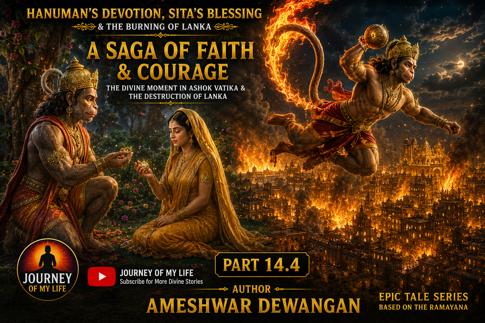
🐒 Hanuman's Divine Mission – Ashok Vatika & The Burning of Lanka
After discovering the wounded Jatayu, Lord Rama and Lakshmana gently lifted the noble bird into their arms. With great difficulty, Jatayu revealed that Ravana, the king of Lanka, had abducted Goddess Sita and carried her away in the celestial Pushpaka Vimana.
Having fulfilled his final duty, Jatayu peacefully left his mortal body in the presence of Lord Rama. Deeply moved by his courage and devotion, Lord Rama personally performed the last rites of the heroic king of birds, granting him eternal honor.
Continuing their search through forests and mountains, the two brothers finally reached the humble hermitage of the aged devotee Shabari.
For many years Shabari had patiently waited for the arrival of Lord Rama, following the promise given by her Guru.
With tears of joy she welcomed Him and lovingly offered sweet forest berries after carefully tasting each one to ensure they were the sweetest.
Lord Rama accepted them with affection, teaching the world that pure devotion is always greater than wealth, status or ritual.
Following Shabari's guidance, Lord Rama and Lakshmana reached the beautiful Rishyamukha Mountain, where destiny arranged another historic meeting.
Sugriva, the exiled king of the Vanaras, lived there in fear of his powerful brother Vali.
Before meeting the strangers, Sugriva sent his most trusted minister to learn who they were.
That minister was Hanuman.
Disguised as a humble ascetic, Hanuman approached Lord Rama with folded hands and spoke with great wisdom and humility.
The moment Lord Rama heard Hanuman's words, He recognized the extraordinary devotion hidden within him.
Hanuman soon realized that the prince before him was none other than the Supreme Lord.
Falling at Rama's feet, he offered his life in eternal service.
Thus began one of the greatest relationships of devotion in all of history—the eternal bond between Lord Rama and Hanuman.
Hanuman introduced Lord Rama to Sugriva. Both shared their sorrows and formed a sacred friendship.
Lord Rama promised to restore Sugriva's kingdom by defeating Vali, while Sugriva vowed to help search for Goddess Sita.
Soon, Lord Rama fulfilled His promise by defeating Vali in battle and restoring Sugriva to the throne of Kishkindha.
Sugriva immediately organized thousands of Vanaras and sent search parties in every direction.
Hanuman, Angada and Jambavan journeyed south until they reached the shore of the vast ocean.
There they learned from the aged vulture Sampati that Goddess Sita was imprisoned in Lanka.
Standing before the mighty ocean, Hanuman remembered the divine powers hidden within him.
Encouraged by Jambavan, he expanded into a gigantic form, bowed toward Lord Rama and leaped across the ocean with unimaginable strength.
Mountains trembled beneath his feet as he soared through the sky.
After overcoming many obstacles, Hanuman finally entered the golden city of Lanka during the night.
Searching every palace and garden, he eventually reached the peaceful Ashok Vatika.
There, beneath a great Ashoka tree, sat Goddess Sita.
She was surrounded by fierce Rakshasis but remained calm, constantly remembering Lord Rama.
Hidden among the branches, Hanuman respectfully recited the glories of Lord Rama before revealing himself.
To remove all doubt, he presented Lord Rama's sacred ring.
The moment Sita saw the ring, tears of hope filled her eyes.
She blessed Hanuman and entrusted him with the Chudamani, asking him to deliver it to Lord Rama as proof that she remained steadfast in her faith.
Before leaving Lanka, Hanuman decided to measure Ravana's strength.
He destroyed large sections of Ashok Vatika, defeated many powerful warriors and allowed himself to be captured so that he could deliver Lord Rama's message directly to Ravana.
Standing fearlessly in Ravana's royal court, Hanuman urged the king to return Goddess Sita and seek forgiveness.
Blinded by arrogance, Ravana rejected the advice and ordered Hanuman's tail to be wrapped in cloth and set on fire.
The demons celebrated, believing they had humiliated the Vanara hero.
Instead, Hanuman used the burning tail as a weapon.
Leaping from palace to palace, he set the golden city of Lanka ablaze.
Flames rose into the night sky while Hanuman ensured that Ashok Vatika, where Sita was staying, remained untouched.
After bowing once again before Goddess Sita, Hanuman crossed the ocean and joyfully returned to Lord Rama with the news that Sita had been found.
The long search was over.
Now the time had come for the great march toward Lanka and the final battle between Dharma and Adharma.
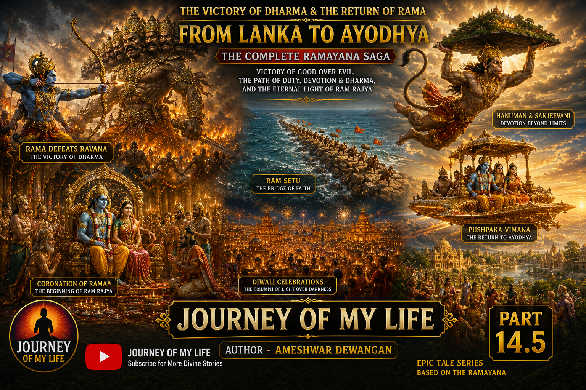
🏹 Ram Setu, The Great War of Lanka & The Glory of Ram Rajya
After Hanuman returned from Lanka and delivered Goddess Sita's message, Lord Rama's heart was filled with renewed hope. The time for waiting had ended. Dharma now called for action. Lord Rama, Lakshmana, Sugriva, Hanuman, Jambavan, Angada and the mighty Vanara army marched towards the southern seashore to begin their journey to Lanka.
Standing before the vast ocean, Lord Rama prayed respectfully to the Ocean God, requesting a safe passage for His army. When no answer came for several days, Lord Rama prepared His divine bow. Realizing the Lord's power, the Ocean God appeared and advised Him to build a bridge across the sea.
Under the guidance of Nala and Nila, the Vanara army began constructing the legendary Ram Setu. Huge mountains and massive stones were carried across the shore. Every stone bearing the sacred name of "Rama" floated upon the ocean, astonishing everyone.
Within a short time, a magnificent bridge connected Bharat with Lanka, becoming an eternal symbol of faith, teamwork and Divine Grace.
The mighty army crossed Ram Setu and reached Lanka. Lord Rama offered Ravana one final opportunity to avoid war by returning Goddess Sita with honor.
Through Angada, a message of peace was delivered to Ravana's royal court. Even Vibhishana, Ravana's righteous brother, advised him to abandon arrogance and choose Dharma.
Blinded by pride, Ravana rejected every opportunity for peace.
Unable to support injustice any longer, Vibhishana left Lanka and surrendered at the feet of Lord Rama. Without hesitation, Lord Rama welcomed him with compassion and declared that anyone seeking sincere refuge would always be protected.
Soon the greatest war of the Treta Yuga began.
The battlefields echoed with the sounds of conch shells, roaring warriors and celestial weapons. Hanuman displayed unimaginable strength, Angada challenged the greatest Rakshasa commanders, and Lakshmana fought fearlessly beside his elder brother.
One by one, Ravana's mighty generals were defeated.
Kumbhakarna, Ravana's gigantic brother, entered the battlefield like a living mountain. Despite his immense power, he was ultimately defeated by Lord Rama after a fierce battle.
Next came Indrajit, Ravana's brilliant son and master of celestial weapons. Using powerful illusions, he wounded both Rama and Lakshmana. During the battle, Lakshmana was severely injured by the Shakti weapon.
On the advice of the royal physician Sushena, Hanuman flew to the Himalayas to bring the life-saving Sanjeevani herb. Unable to identify the exact plant, he lifted the entire mountain and carried it back to the battlefield.
The sacred herb revived Lakshmana, filling the entire army with renewed courage.
At last, the final battle between Lord Rama and Ravana began.
The two greatest warriors faced each other beneath the skies of Lanka. Divine arrows illuminated the heavens while the gods, sages and celestial beings watched the historic duel.
Again and again, Lord Rama struck Ravana with powerful arrows, but the demon king continued to fight with unmatched determination.
Finally, Sage Agastya reminded Lord Rama of the sacred Aditya Hridayam prayer, praising the Sun God and strengthening His spirit.
Empowered by Divine wisdom, Lord Rama released the mighty Brahmastra.
The celestial arrow pierced Ravana's heart.
The mighty king of Lanka fell upon the battlefield, bringing an end to his reign of arrogance and injustice.
The gods showered flowers from heaven while cries of victory echoed across the universe.
Lord Rama crowned Vibhishana as the new king of Lanka and reunited with Goddess Sita.
After completing the fourteen years of exile, Lord Rama, Goddess Sita, Lakshmana, Hanuman and their companions returned to Ayodhya aboard the Pushpaka Vimana.
The people of Ayodhya welcomed them with millions of glowing lamps. Homes, streets and temples shone with light as darkness gave way to hope and joy.
This glorious homecoming is remembered every year as the sacred festival of Deepavali, celebrating the victory of light over darkness and righteousness over evil.
Soon after His return, Lord Rama was crowned King of Ayodhya.
Thus began the golden age known as Ram Rajya.
Justice prevailed throughout the kingdom. Truth guided every decision. Prosperity reached every household. No one suffered from hunger, fear or injustice. The weak were protected, the wise were respected and every citizen lived with dignity and peace.
Lord Rama ruled not merely as a king, but as the ideal guardian of Dharma whose life became an eternal example for humanity.
Even today, the Ramayana continues to inspire millions across the world. It teaches that truth is stronger than falsehood, compassion is greater than hatred, humility is nobler than pride and Dharma always leads to lasting victory.
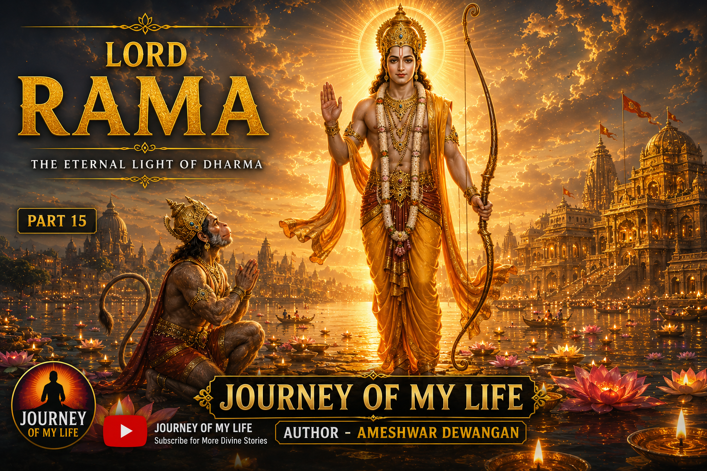
🙏 Eternal Lessons from the Ramayana
The Ramayana is far more than an ancient epic. It is a timeless guide to living a life filled with truth, compassion, courage and righteousness. Every character, every journey and every challenge carries a lesson that remains meaningful even in the modern world.
Lord Rama teaches us that true leadership begins with self-discipline, humility and unwavering commitment to Dharma. Even when faced with exile, separation and war, He never abandoned truth or compassion.
Goddess Sita represents purity, inner strength, patience and unshakable faith. Despite unimaginable hardships, she remained fearless and devoted to righteousness.
Lakshmana teaches the value of selfless service and loyalty, while Bharata reminds us that power is meaningless without humility and love.
Hanuman stands as the eternal symbol of devotion, courage and complete surrender to the Divine. His strength came not from pride but from faith.
Every generation discovers new wisdom within the Ramayana. Whether one seeks guidance in family life, leadership, friendship, sacrifice or spirituality, this sacred epic continues to illuminate the right path.
Its teachings remind us that goodness may sometimes face hardship, but it is never defeated. Truth may be tested, but it ultimately triumphs.
The ideals of Ram Rajya inspire societies built upon justice, compassion, equality and service.
📖 25 Timeless Life Lessons from the Ramayana
The Ramayana is not simply the story of Lord Rama's life. It is a guide that teaches humanity how to live with dignity, honesty, compassion and courage. Every event, every challenge and every character leaves behind lessons that remain meaningful even after thousands of years.
Whether we are students, professionals, parents or leaders, the wisdom of the Ramayana helps us make better decisions and build stronger relationships.
🌿 1. Truth is the greatest strength.
Lord Rama accepted exile without hesitation because protecting truth was more important than gaining a kingdom.
👑 2. A true leader serves others.
Leadership is measured by humility, responsibility and service—not by power or authority.
🏹 3. Keep your promises.
King Dasharatha and Lord Rama proved that a promise must be honored, even when it demands sacrifice.
❤️ 4. Family comes before personal ambition.
The love shared by Rama, Lakshmana, Bharata and Shatrughna is a timeless example of brotherhood.
🙏 5. Respect your parents and teachers.
Obedience rooted in love and respect builds strong character.
🌺 6. Patience is a great virtue.
Goddess Sita endured every hardship with dignity and unwavering faith.
💪 7. Real strength is guided by humility.
Despite possessing unmatched power, Lord Rama never became arrogant.
🐒 8. Devotion makes the impossible possible.
Hanuman crossed the ocean through faith, courage and complete surrender.
🤝 9. Choose friends based on character.
The friendship between Rama and Sugriva was built upon trust and righteousness.
🌿 10. Good company shapes a good life.
The guidance of sages helped Lord Rama throughout His journey.
🔥 11. Pride always leads to destruction.
Ravana possessed immense knowledge and power, but arrogance caused his downfall.
⚠️ 12. Control your desires.
Uncontrolled greed and attachment often become the beginning of suffering.
💖 13. Loyalty is priceless.
Lakshmana and Hanuman never abandoned Lord Rama, even in the hardest times.
🌍 14. Treat everyone equally.
Lord Rama embraced Nishadraj Guha, Kevat and Shabari with equal love and respect.
🌼 15. Compassion is greater than revenge.
Even toward enemies, Lord Rama upheld justice with dignity.
📿 16. Faith gives inner strength.
Trust in the Divine helps us remain steady during life's greatest challenges.
⚖️ 17. Justice must be impartial.
A righteous ruler protects every citizen without favoritism.
🏡 18. Simplicity brings peace.
Lord Rama lived happily in the forest because peace comes from within.
🌳 19. Nature deserves respect.
The forests, rivers and mountains of the Ramayana remind us to live in harmony with nature.
🛡️ 20. Protect the weak.
Strength should always be used to defend others, never to oppress them.
✨ 21. Forgiveness is powerful.
Compassion heals hearts more deeply than anger ever can.
🕊️ 22. Dharma should guide every decision.
Right actions create lasting peace for individuals and society.
🌞 23. Never lose hope.
Even during exile and separation, Lord Rama never gave up.
👣 24. Every challenge teaches something valuable.
Difficult times prepare us for greater responsibilities.
🌺 25. Goodness always triumphs.
The victory of Lord Rama reminds us that truth, love and righteousness always overcome evil.
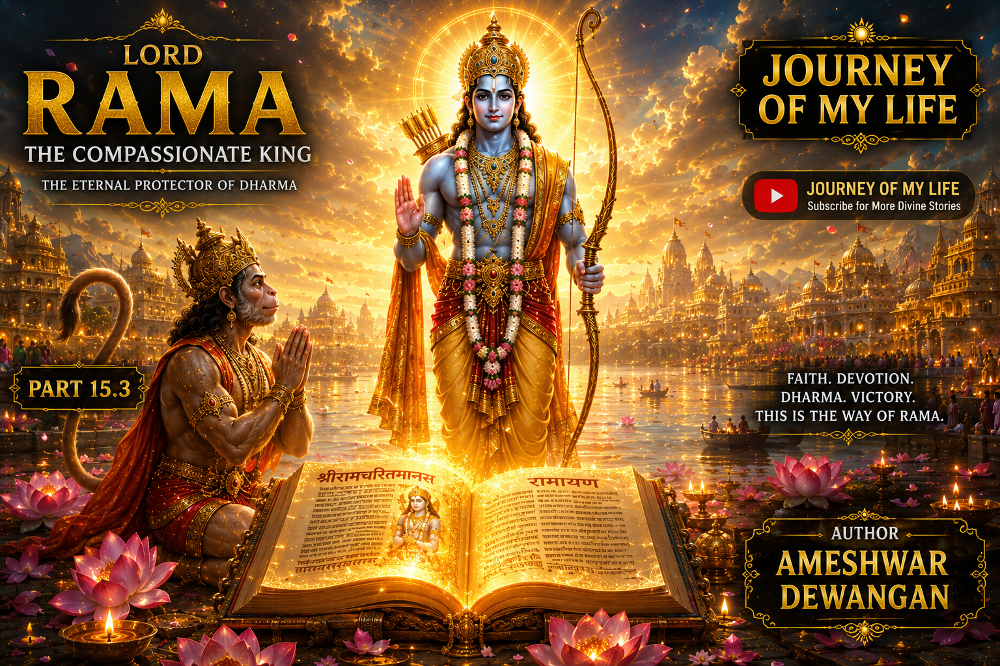
✨ 30 Powerful & Inspirational Quotes from the Ramayana
The Ramayana is filled with timeless wisdom that continues to inspire millions across generations. These teachings encourage us to live with truth, courage, compassion and unwavering faith.
Below are thirty meaningful quotes inspired by the values and teachings of the Ramayana.
🌿 1.
"Dharma may be difficult to follow, but it never leads us in the wrong direction."
🌿 2.
"A promise protected with honesty is more valuable than a kingdom."
🌿 3.
"Humility shines brighter than power."
🌿 4.
"True courage is shown by protecting others, not by ruling over them."
🌿 5.
"Faith turns impossible paths into possible journeys."
🌿 6.
"A pure heart never fears the darkness."
🌿 7.
"The greatest wealth is a peaceful mind."
🌿 8.
"Love guided by Dharma becomes eternal."
🌿 9.
"Every challenge carries a hidden lesson."
🌿 10.
"Patience is the silent strength of the wise."
🌿 11.
"A righteous leader serves before expecting to be served."
🌿 12.
"Forgiveness is stronger than revenge."
🌿 13.
"Character is built through sacrifice."
🌿 14.
"Loyalty is proven during difficult times."
🌿 15.
"Where compassion lives, hatred cannot survive."
🌿 16.
"Good company leads us toward wisdom."
🌿 17.
"The strongest person is the one who controls anger."
🌿 18.
"Never allow pride to rule your decisions."
🌿 19.
"The Divine always stands beside those who stand for truth."
🌿 20.
"Hope never disappears from a faithful heart."
🌿 21.
"Service performed with love becomes worship."
🌿 22.
"Kind words have the power to heal wounded hearts."
🌿 23.
"Wisdom grows where ego disappears."
🌿 24.
"Real victory is winning over one's own weaknesses."
🌿 25.
"A disciplined life creates lasting success."
🌿 26.
"Good deeds never go unnoticed by the Divine."
🌿 27.
"Faith gives courage even when the path is uncertain."
🌿 28.
"The light of truth always defeats the darkness of falsehood."
🌿 29.
"The Ramayana teaches us to become better human beings every day."
🌿 30.
"Walk with Dharma, speak with kindness and live with devotion—this is the path shown by Lord Rama."
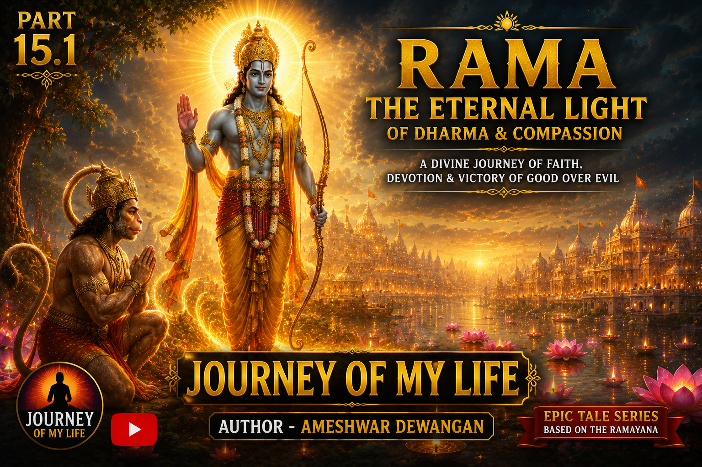
❓ Frequently Asked Questions (FAQ) About the Ramayana
The Ramayana is one of the world's greatest spiritual epics. Over the centuries, millions of readers have asked questions about its characters, teachings and historical significance. Below are some of the most frequently asked questions along with simple and informative answers.
1. What is the Ramayana?
The Ramayana is one of the two great Sanskrit epics of India. It narrates the life, ideals and journey of Lord Rama while teaching Dharma, truth, devotion and righteousness.
2. Who wrote the Ramayana?
The original Sanskrit Ramayana was composed by Maharishi Valmiki, who is honored as the Adi Kavi (the first poet).
3. Who is Lord Rama?
Lord Rama is the seventh incarnation of Lord Vishnu and is regarded as the ideal king, ideal son, ideal husband and the embodiment of Dharma.
4. Who is Goddess Sita?
Goddess Sita is the wife of Lord Rama and is revered as an incarnation of Goddess Lakshmi. She symbolizes purity, devotion, patience and inner strength.
5. Why was Lord Rama sent into exile?
Lord Rama accepted fourteen years of exile to fulfill the promise made by King Dasharatha to Queen Kaikeyi, placing Dharma above personal happiness.
6. Who was Hanuman?
Lord Hanuman is the greatest devotee of Lord Rama. He is admired for his devotion, courage, wisdom, humility and selfless service.
7. Who was Ravana?
Ravana was the powerful king of Lanka. Though highly knowledgeable and devoted to Lord Shiva, his arrogance and desire ultimately led to his downfall.
8. Why did Ravana abduct Sita?
Influenced by pride, revenge and desire, Ravana abducted Goddess Sita after the incident involving his sister Surpanakha.
9. What is Ram Setu?
Ram Setu is the legendary bridge built across the ocean by the Vanara army under the guidance of Nala and Nila, enabling Lord Rama's army to reach Lanka.
10. Why is Hanuman so respected?
Hanuman represents perfect devotion, unwavering faith, courage, humility and complete surrender to the Divine.
11. What is the main message of the Ramayana?
The Ramayana teaches that truth, Dharma, compassion, humility and devotion always triumph over arrogance and evil.
12. Why is Diwali celebrated in connection with Lord Rama?
Diwali commemorates the return of Lord Rama, Goddess Sita and Lakshmana to Ayodhya after completing fourteen years of exile and defeating Ravana.
13. What does Ram Rajya mean?
Ram Rajya refers to the ideal kingdom ruled by Lord Rama, where justice, peace, prosperity and equality prevailed.
14. What does the Lakshmana Rekha symbolize?
It symbolizes protection, wisdom, discipline and the importance of respecting righteous boundaries.
15. Why is the Ramayana still relevant today?
Its teachings on leadership, family values, ethics, honesty, courage and compassion remain timeless and continue to inspire people across the world.
16. What can we learn from Bharata?
Bharata teaches humility, selfless love and the importance of placing righteousness above power.
17. What is Hanuman's greatest teaching?
Hanuman teaches that complete faith in God removes fear and makes even the impossible achievable.
18. Is the Ramayana only a religious book?
No. Along with its spiritual importance, it is also a timeless guide to ethics, leadership, relationships and moral living.
19. Why is the Ramayana read during festivals?
Reading the Ramayana is believed to inspire devotion, strengthen moral values and bring peace and positivity into life.
20. What is the greatest lesson of the Ramayana?
The greatest lesson is that Dharma, truth, humility and devotion always lead to lasting victory, no matter how difficult the journey may be.
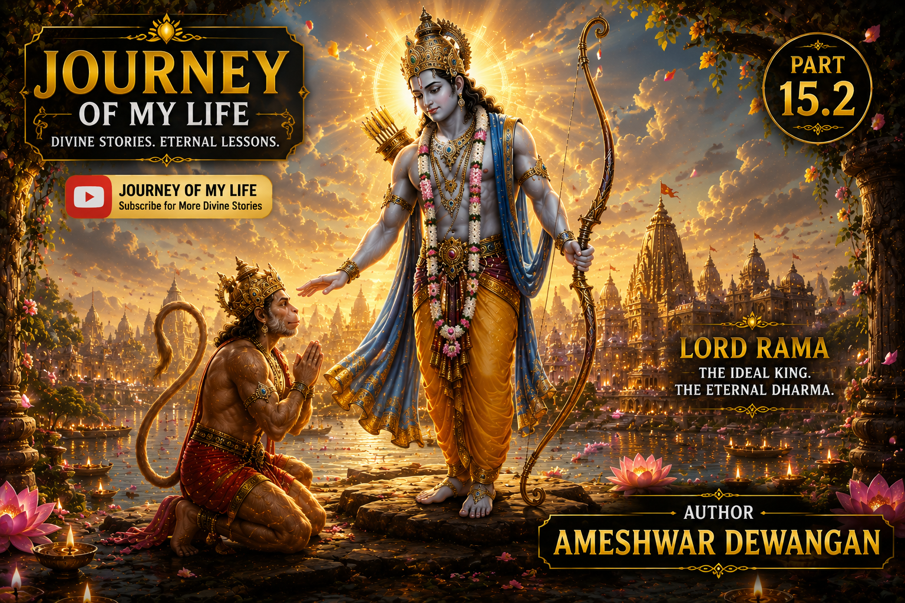
🪔 Grand Conclusion – The Eternal Light of the Ramayana
As we reach the end of this sacred journey, we realize that the Ramayana is far more than an ancient story. It is a timeless guide that continues to illuminate the lives of millions across the world. Every chapter reminds us that truth is stronger than falsehood, compassion is greater than hatred and Dharma is the foundation of a meaningful life.
The life of Lord Rama teaches us that true greatness is measured not by power or wealth, but by integrity, humility and unwavering commitment to righteousness. Even in the face of exile, separation and immense challenges, He never abandoned His principles.
Every character in the Ramayana leaves behind a lasting lesson. Sita teaches purity and courage. Lakshmana teaches loyalty and selfless service. Bharata teaches humility and sacrifice. Hanuman teaches devotion, strength and absolute faith. Even Ravana reminds us that knowledge without humility leads to destruction.
The Ramayana continues to inspire people of every generation because its wisdom is timeless. Whether in family life, leadership, friendship or personal growth, its teachings remain as relevant today as they were thousands of years ago.
🌸 A Message to Every Reader
May the ideals of Lord Rama inspire you to speak the truth, respect your parents and teachers, protect those in need, remain humble during success and courageous during adversity.
May the devotion of Hanuman fill your heart with faith, the patience of Sita strengthen your spirit and the sacrifice of Bharata remind you that love is greater than power.
Whenever life presents difficult choices, may the light of Dharma guide your path.
📖 Author's Note
This article has been written with deep respect for the sacred traditions of the Ramayana. It is intended to introduce readers to the timeless values, inspiring characters and spiritual wisdom found in this revered epic.
Readers who wish to explore the Ramayana in greater depth are encouraged to study traditional versions such as the Valmiki Ramayana, Ramcharitmanas and other respected regional retellings.
🚩 Jai Shri Ram
🚩 श्री राम जय राम जय जय राम 🚩
🙏 Jai Shri Ram 🙏
Thank you for reading this complete journey of the Ramayana. May peace, wisdom, courage and Dharma always remain in your heart.